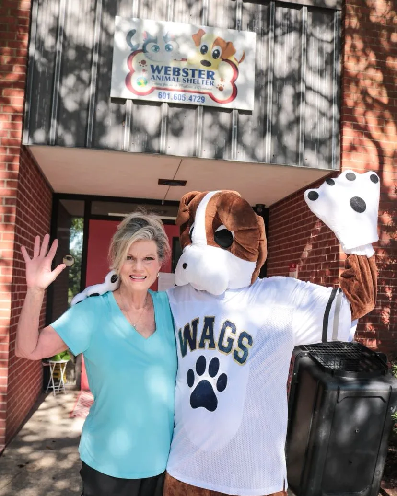
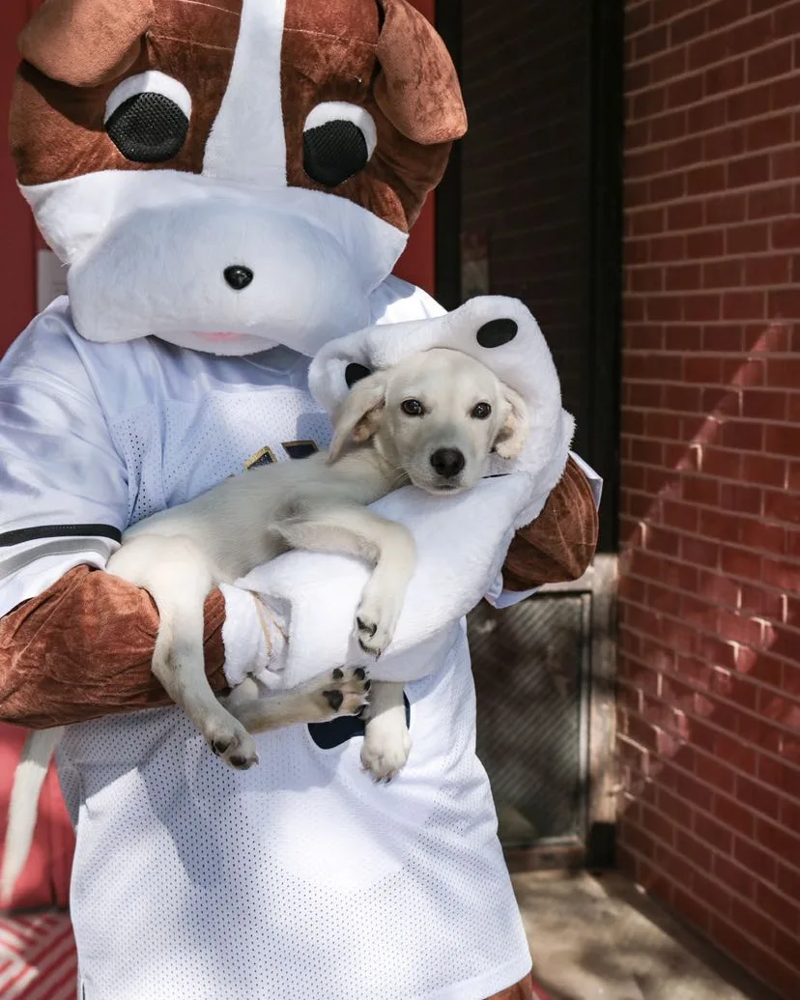
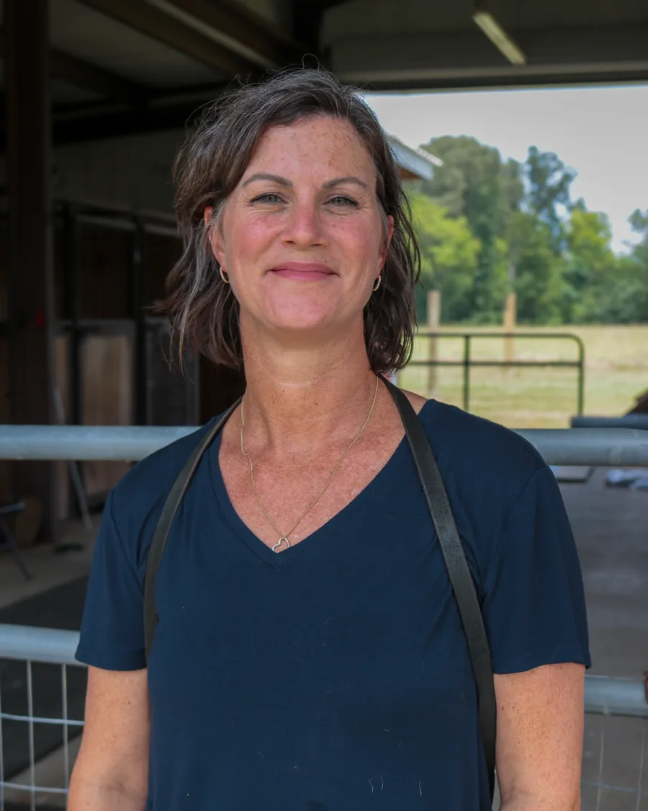
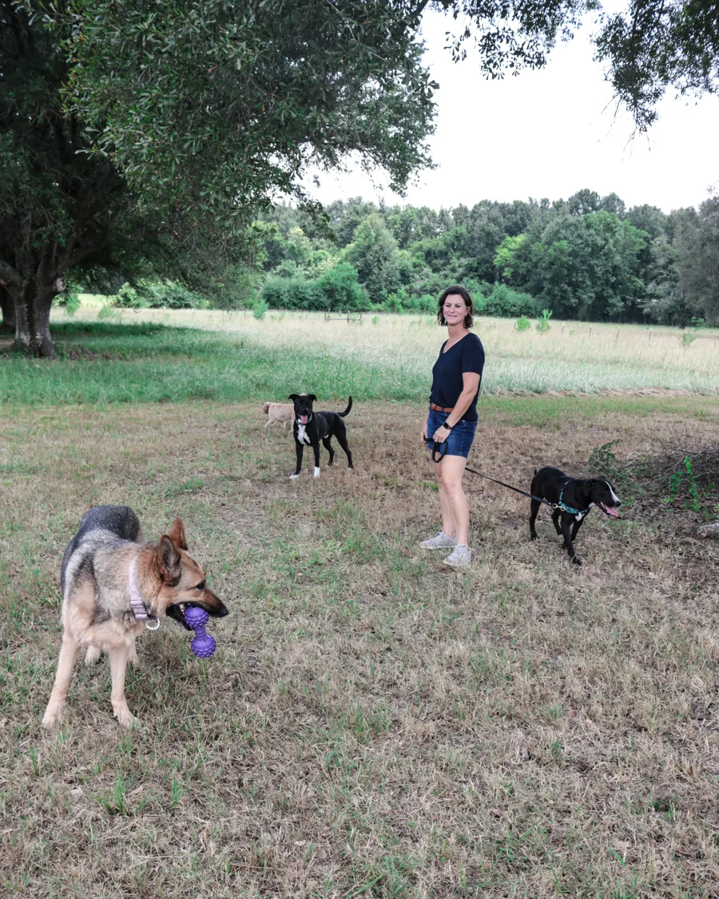
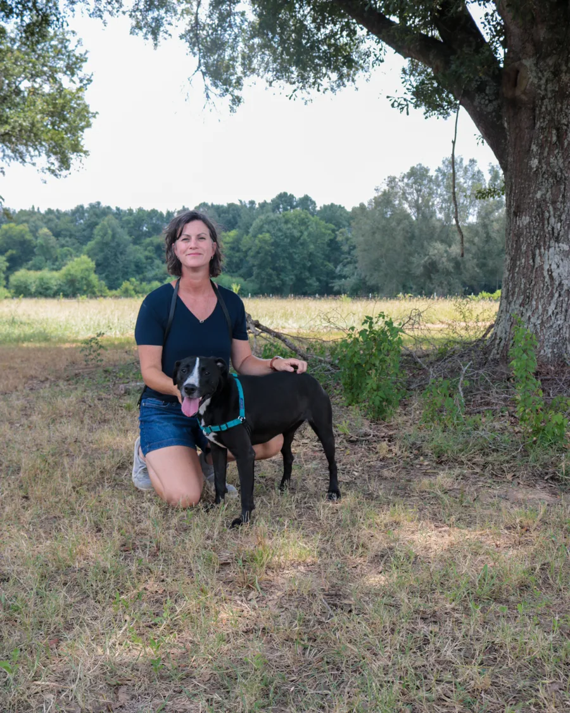
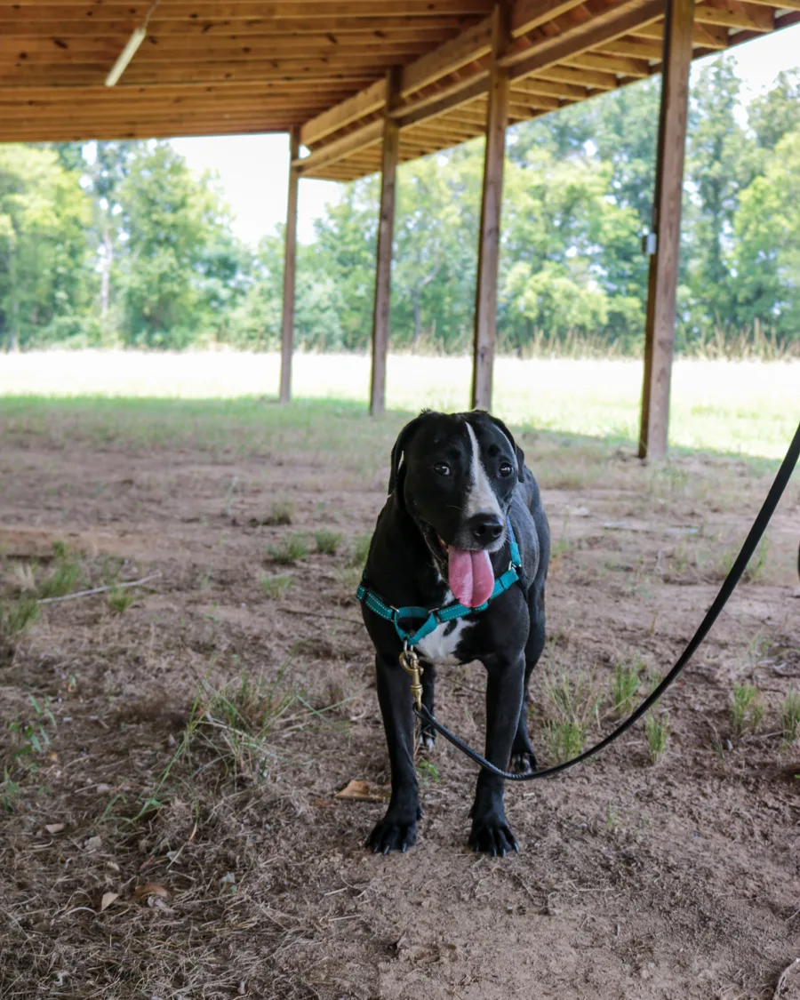

Paws for a Purpose
Supporting Shelters. Strengthening Rescues. Helping Animals Move Toward Home.
Every animal deserves care, compassion, and the opportunity for a brighter future. Through Paws for a Purpose, Heavenly Paws Pet Club brings people, businesses, volunteers, and community resources together to support designated animal shelters and rescue organizations serving Madison County, Mississippi.
Because when a community works together, small acts can create a very big impact.
One Paw. One Person. One Community at a Time.
Our Shelters and Rescues Shouldn't Have to Do It Alone
Every day, local animal welfare organizations care for animals who have been lost, surrendered, neglected, abandoned, or simply have not found the right home yet. Some need food and supplies. Some need medical attention. Some need more socialization. Some need additional time to heal before they can be adopted. Some simply need more people to know they are there.
At the same time, people throughout our community want to help — but often do not know where to begin. Paws for a Purpose connects those two needs.
Heavenly Paws Pet Club created Paws for a Purpose to help mobilize our community around practical, identified needs of designated animal welfare organizations in Madison County. We don't replace the work of shelters and rescues. We come alongside them.
Turning a Love for Animals Into Local Action
Our mission is to strengthen animal welfare in Madison County by connecting designated shelters and rescue organizations with additional community support, resources, volunteers, awareness, and special projects.
We want to help create a community where animals receive the time and care they need, shelters and rescues have additional support, more adoptable animals are seen, families are better prepared for successful pet ownership, volunteers have meaningful ways to serve, and local businesses and community groups can make a tangible local impact.
Madison County First
Paws for a Purpose is intentionally a local initiative. Rather than attempting to serve shelters and rescues everywhere, we focus our resources on selected animal welfare organizations serving Madison County, Mississippi. This allows us to build stronger relationships, understand specific needs, and make a more meaningful difference in the community we call home.
Local needs. Local partners. Local impact.
Meet the Organizations We're Supporting
Our current designated Paws for a Purpose partners are Webster Animal Shelter and Southern Paws Farms Rehabilitation Center.


Webster Animal Shelter
Webster Animal Shelter provides care for animals in need while working to reunite pets with families and help adoptable animals find loving homes.
Through Paws for a Purpose, Heavenly Paws Pet Club can come alongside Webster with additional community support such as volunteer projects, requested supplies, adoption resources, community awareness, special initiatives, and other identified needs as resources allow.


Southern Paws Farms Rehabilitation Center
Not every shelter animal is immediately ready for adoption. Some need additional time, rehabilitation, socialization, confidence-building, consistent care, or simply a quieter environment where healing can begin.
Southern Paws Farms Rehabilitation Center provides a safe place for shelter animals who are not currently ready for adoption to receive the additional support they need. The goal is to help them heal, develop, and become better prepared for the next step: a loving adoptive home.
Paws for a Purpose helps support that journey through community awareness, requested resources, volunteer support, special projects, sponsorship support when applicable, and other identified needs as the initiative grows.
Meet Lily
The First Step of a New Journey


Lily is beginning a new chapter. After being cared for at Webster Animal Shelter, Lily is becoming the first dog taken into Southern Paws Farms Rehabilitation Center for additional rehabilitation and support.
Her story illustrates why this partnership matters. Sometimes an animal is not ready to move directly from shelter life into an adoptive home. They may need another step in between. For Lily, that step is a safe place where she can receive additional time, individualized care, rehabilitation, encouragement, and the opportunity to become better prepared for adoption.
Paws for a Purpose helps bring community support around that journey.
Because sometimes a second chance needs more than one step.
How Paws for a Purpose Will Help
Paws for a Purpose is just getting started. As the initiative grows, our support may include the following, based on partner needs and available resources:
- Helping Paws hands-on improvement projects
- Volunteer service days and approved service opportunities
- Requested supplies, equipment, and animal enrichment items
- Rehabilitation support for animals who need additional time before adoption
- Adoption Welcome Bags and practical resources for newly adopted pets and their families
- Pet-owner education designed to support successful, lifelong placements
- Promotion and awareness for adoptable animals and partner organizations
- Donation drives and community campaigns tied to identified needs
- Other partner-specific projects as needs and resources develop
Projects and assistance will be based on identified needs and the availability of volunteers, donated goods, sponsorships, funding, and other resources.
Helping a pet find a home matters. Helping that pet stay successfully in that home matters too.
Be Part of the Beginning
Paws for a Purpose is just getting started — and you can be part of building it. You do not have to run a shelter. You do not have to adopt another pet. You do not have to be a Heavenly Paws Pet Club member.
If you care about animals and want to make a local difference, we would love to know how you might like to be involved as opportunities begin to develop. You may be interested in volunteering, providing requested supplies, involving your business, church, civic group or organization, offering a professional skill, helping with future projects, or simply receiving updates as Paws for a Purpose grows.
Thank you for putting your paws behind the purpose!
Paws for a Purpose is just getting started, and we appreciate your interest in being part of it. Our Heavenly Paws team will keep your information and reach out as opportunities that match your interests begin to develop.
Want to Help Support the Purpose?
Paws for a Purpose will grow through people and businesses who believe local animals and the organizations caring for them deserve strong community support. If you would like to financially support Paws for a Purpose, you can do so through the existing Heavenly Paws Guardian Angels giving program.
Frequently Asked Questions
What is Paws for a Purpose?
Paws for a Purpose is a Heavenly Paws Pet Club community initiative created to support designated animal shelters, rescues, rehabilitation efforts, and animals in need in Madison County, Mississippi.
Which organizations do you currently support?
Our current designated partners are Webster Animal Shelter and Southern Paws Farms Rehabilitation Center.
Will Paws for a Purpose support organizations outside Madison County?
No. The initiative is intentionally focused on Madison County so our resources and community support can make a concentrated local impact.
Can any shelter or rescue apply for funding?
Paws for a Purpose is not an open grant program. Support is directed toward designated Madison County animal welfare partners selected by Heavenly Paws Pet Club.
Do I have to be a Pet Club member to get involved?
No. Paws for a Purpose is designed to create opportunities for the broader community to help as needs and projects develop.
How can I financially support Paws for a Purpose?
Financial support is handled through the Heavenly Paws Guardian Angels program. Use the Support Paws for a Purpose button on this page to go directly there.
Together, We Can Build Something That Matters
Paws for a Purpose is at the beginning. There are no long lists of completed projects yet. No impressive impact numbers. No years of stories to tell. What we do have is a clear purpose: to strengthen the work of local animal welfare organizations and help more animals move toward healing, stability, and loving homes.
Every meaningful community initiative begins the same way — with people deciding that something matters enough to help.
ONE PAW. ONE PERSON. ONE COMMUNITY AT A TIME.